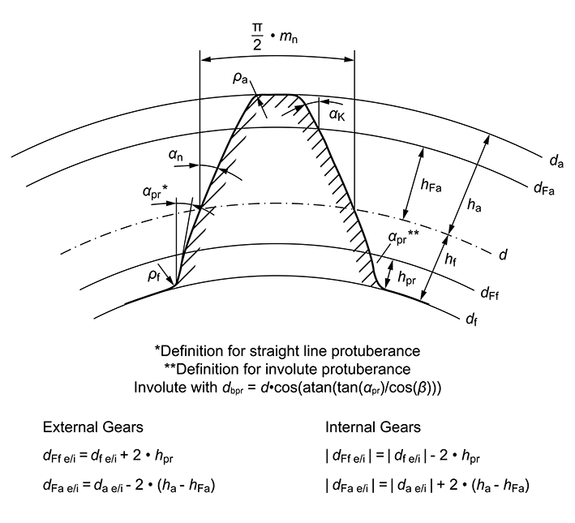
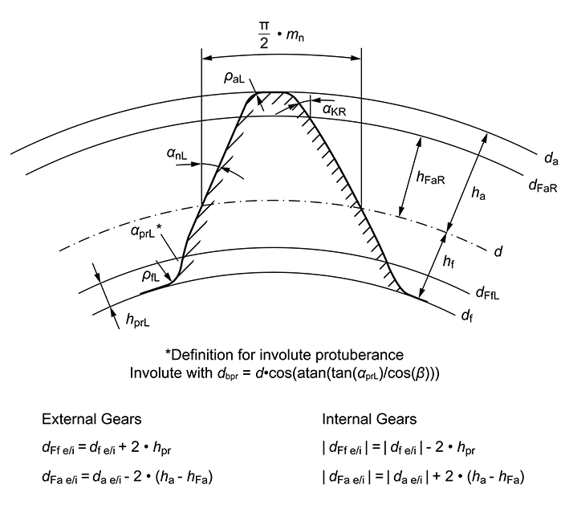

|
|
|


构造渐开线
选择 时，您需要输入的参数比选择 时要少。本质区别在于不模拟制造过程，而是直接生成渐开线。通常，构造渐开线的凸起部分被定义为具有不同基圆直径（由 αprP 计算）的渐开线。此外，凸起也可以定义为直线。
在齿根处，渐开线由根半径系数 ρfP 定义的半径闭合。在理论渐开线中，根半径系数通常大于参考齿廓的系数，因为制造过程不涉及展成。

图 15.32：用于"构造渐开线"配置的参考齿廓
对于非对称齿轮：

图 15.33：用于"构造渐开线"配置的非对称齿轮参考齿廓图
Constructed involute
When you select , you do not need to enter as many parameters as you do when you select . The essential difference is that the manufacturing process is not simulated, and the involute is generated directly. Normally the protuberance part of the constructed involute is defined as an involute with a different base diameter (calculated from αprP). Additionally, protuberance can be defined also as a straight line.
In the gear root, the involute is closed by a radius that is defined by the root radius coefficient ρfP . In theoretical involutes, the root radius coefficient is usually greater than the coefficient for a reference profile, because the manufacturing process does not involve generation.
Figure 15.32: Reference profile for configuration: Constructed involute
For asymmetrical gears:
Figure 15.33: Figure: Reference profile for asymmetrical gears for the configuration: Constructed involute